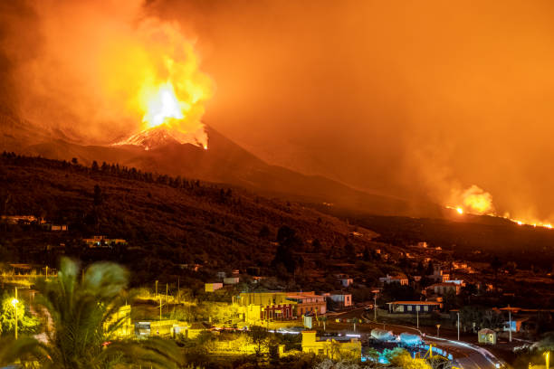

A forest fire raging through the mountains of Penteli, Greece,
illuminated the night sky with an eerie orange glow. The wildfire, sparked by human activity, swept
through the dense forest, engulfing trees and vegetation in its path. The crackling of flames echoed
through the darkness as firefighters battled tirelessly to contain the blaze, their efforts
illuminated by the flickering flames against the backdrop of the night. The scent of smoke hung
heavy in the air, a stark reminder of the destructive force of wildfires and the urgent need for
conservation and prevention measures. Click->See
reference

One of the concerns associated with Cumbre Vieja is the possibility of a large-scale collapse of its western flank into the Atlantic Ocean, which could trigger a tsunami with far-reaching consequences for the surrounding regions. This concern arises due to the presence of geological faults and fractures that could destabilize the flank of the volcano. While Cumbre Vieja has been relatively quiet in recent decades, scientists closely monitor its activity to assess any potential risks and to better understand the volcanic processes occurring beneath its surface. Click->See
reference